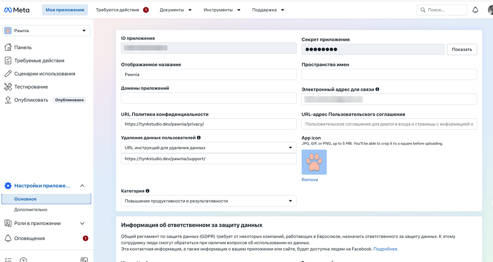

3.2 Настройки приложения (Meta for Developers)
developers.facebook.com/apps → выбери приложение → Настройки приложения → Основное. Это базовая карточка приложения — аналог App Information у Apple и App content у Google, только здесь ещё и живёт App ID/Secret, которые нужны SDK в коде.
Основные поля
ID и секрет приложения — встраиваются в SDK (ID публичный, секрет — только на сервере, если он вообще используется; для клиентского SDK, как у Pawnia, достаточно Client Token, который берётся отдельно во вкладке «Дополнительно», не здесь).

Скрыт: email для связи
Здесь же, поле «Электронный адрес для связи» — контакт, по которому Meta пишет о проблемах с приложением. Укажи ящик, который реально читаешь.
Скрыт: ID приложения
Твой ID будет здесь же, в этом поле. Он не секретный (зашивается в приложение вместе с SDK), но в мануале скрыт, как и остальные идентификаторы.
ID приложения
Публичный идентификатор — он и зашит в SDK/манифесты, не секрет. «Секрет приложения» справа — для серверных вызовов, в клиентском SDK Pawnia не используется.
URL Политики конфиденциальности
Та же страница, что мы указывали в App Store Connect (1.4) и Google Play (2.3/2.4) — должна совпадать везде.
App Dashboard →Удаление данных пользователей
Отдельное требование Meta — URL с инструкцией, как пользователь может запросить удаление своих данных. Та же логика, что в Data Safety у Google (шаг 2.4), но отдельное поле именно здесь.